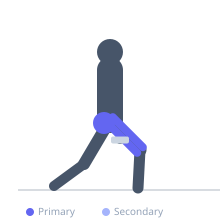
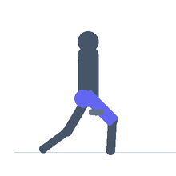

Exercise guide / Lateral Lunge
Lateral Lunge
The lateral lunge steps to the side rather than forward or backward, loading the working leg in the frontal plane and providing a unique training stimulus for the adductors, gluteus medius, and quadriceps simultaneously. The inner thigh of the stationary leg is stretched while the working leg squats. It develops frontal-plane strength and mobility that forward/backward lunges do not address.
Primary muscles
rectus femoris
vastus lateralis
gluteus maximus
adductor magnus
Secondary muscles
gluteus medius
adductor longus
gracilis
Stabilizers
tensor fasciae latae
transverse abdominis
Equipment
No Equipment (Bodyweight)
Optional
Dumbbell (Fixed)


Starting position
- Stand with feet together, core engaged, hands on hips or holding dumbbells at the sides.
Setup
- Wear footwear with good lateral grip. Perform bodyweight first to establish the movement pattern before adding load.
Steps
- Step 1: Take a large step directly to one side — the foot lands flat and pointed forward or slightly outward.
- Step 2: Sit the hip of the stepping leg back and down, bending that knee while keeping the stationary leg straight.
- Step 3: Keep the torso relatively upright and reach the hands forward or keep them on the hips for balance.
- Step 4: Drive through the working heel to push back to the starting position.
- Step 5: Alternate sides each rep or complete all reps on one side.
Coaching cues
- Sit back into the hip, not down onto the knee
- Keep the stationary leg long and straight
- Foot flat on the working leg — don't let the heel rise
Breathing
- Inhale as you step out and lower. Exhale as you return to standing.
Range of motion
- The working knee bends until the thigh approaches parallel. The stationary leg stays straight with the foot flat.
Tempo
- 2-1-1-0
Common mistakes
- Taking too small a step, reducing the adductor stretch and hip loading
- Letting the working knee cave inward
- Excessive forward lean of the torso
Safety
- Adequate hip adductor flexibility is necessary — start with a shorter step and increase gradually
- If adductor soreness is severe the day after, reduce step width in the next session
Training
- strength: 6–10 reps
- hypertrophy: 10–15 reps
- endurance: 15–20 reps
- strength: 3–4 sets
- hypertrophy: 3–4 sets
- endurance: 2–3 sets
- Rest: {'strength': 120, 'hypertrophy': 60, 'endurance': 45}